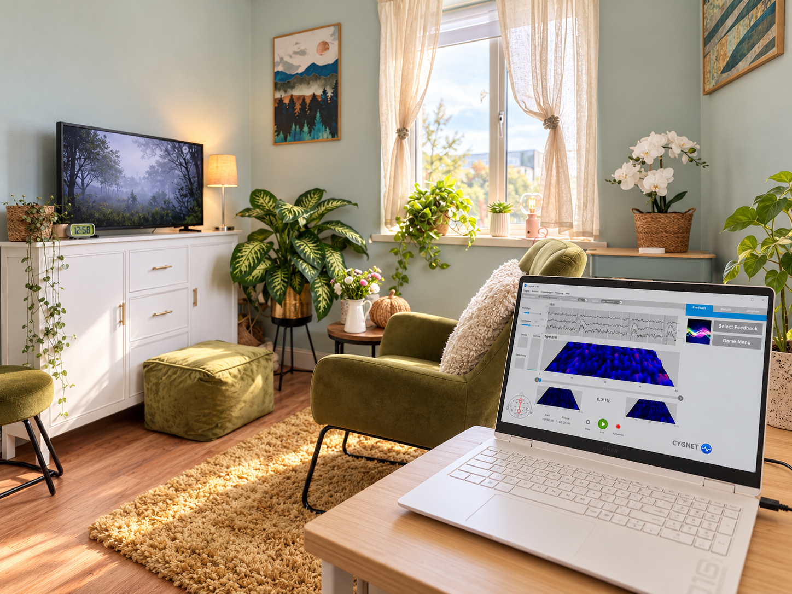

Neurofeedback
What is neurofeedback?
Neurofeedback is a way of helping the brain learn to regulate itself more effectively. It works by giving the brain real-time feedback about its own activity, allowing it to recognise what it is doing and gradually make adjustments in the background.
You do not have to consciously control anything or work out what your brain is doing. Much of this learning happens outside conscious awareness.
Neurofeedback is not snake oil or mumbo jumbo.
It is a scientifically established and well-researched approach that has been studied for decades and has been the subject of thousands of research papers.
Learn more
A useful way to think about neurofeedback is as a mirror for the brain. The brain receives information about its own activity and can use that information to make small adjustments.
It is a little like walking while talking to someone. Your attention may be completely absorbed in the conversation, while your body automatically adjusts to uneven ground, steps over roots and keeps your balance without you consciously planning every movement.
ILF neurofeedback works in a similar way. Your nervous system receives feedback and begins to adjust in the background.

Beyond words
Why I added
neurofeedback
As psychotherapists, we aim to help our clients understand why they respond the way they do in challenging or triggering situations. We explore patterns, triggers and where those responses may come from.
But understanding a pattern does not always mean clients are able to change those responses.
Sometimes the nervous system continues to react in the same familiar way, even when clients understand their patterns very well. That is one of the reasons I trained in neurofeedback.
It gives me another way of helping clients regulate their nervous system alongside psychotherapy, giving the brain the opportunity to practise regulation itself.
In this way, the work can move beyond words, and regulation can begin.
First steps
How do we
get started?
If you are interested in trying neurofeedback, I will first send you a link to a detailed questionnaire which you can complete online, in your own time and free of charge.
Once I have reviewed it, we meet for a full assessment and anamnesis, which usually takes around two hours. We talk through what you are experiencing, what you would like to change and what we would like to focus on with neurofeedback.
As part of the assessment, I also use a Continuous Performance Test to look at areas such as attention, concentration and response consistency.


A typical session
What does a
neurofeedback
session look like?
You come into my practice and settle into a comfortable chair. I place five small sensors on your head. These are connected to a computer and simply pick up information about your brain activity.
While you relax, you watch an animation on the screen. The animation changes in response to what your brain is doing, so your brain receives information about its own activity in real time.
You do not have to work anything out or try to control your brain. You can simply sit back and watch.
Learn more
We always start by looking at how you have been since your last session and what, if anything, has changed.
This might be something in your sleep, mood, focus, stress levels or simply how you have been feeling in everyday life. Even small changes can be important.
Your feedback helps me understand how your nervous system is responding and whether the training should stay the same or be adjusted.
Step by step
What happens during
the training process?
In the beginning, neurofeedback is usually recommended twice a week. As regulation becomes more stable, the gaps between sessions can gradually become longer.
Neurofeedback is a gradual process. At the beginning, we often need to work through specific starting placements and protocols before we can move towards the areas that are most closely connected to your main concerns.
Learn more
The training is adjusted as we go. What you notice between sessions helps guide the next step.
Some people notice changes relatively early, while for others the process develops more gradually. The aim is not to rush the nervous system, but to give it repeated opportunities to practise regulation.

Based at
Athlone Care Clinic